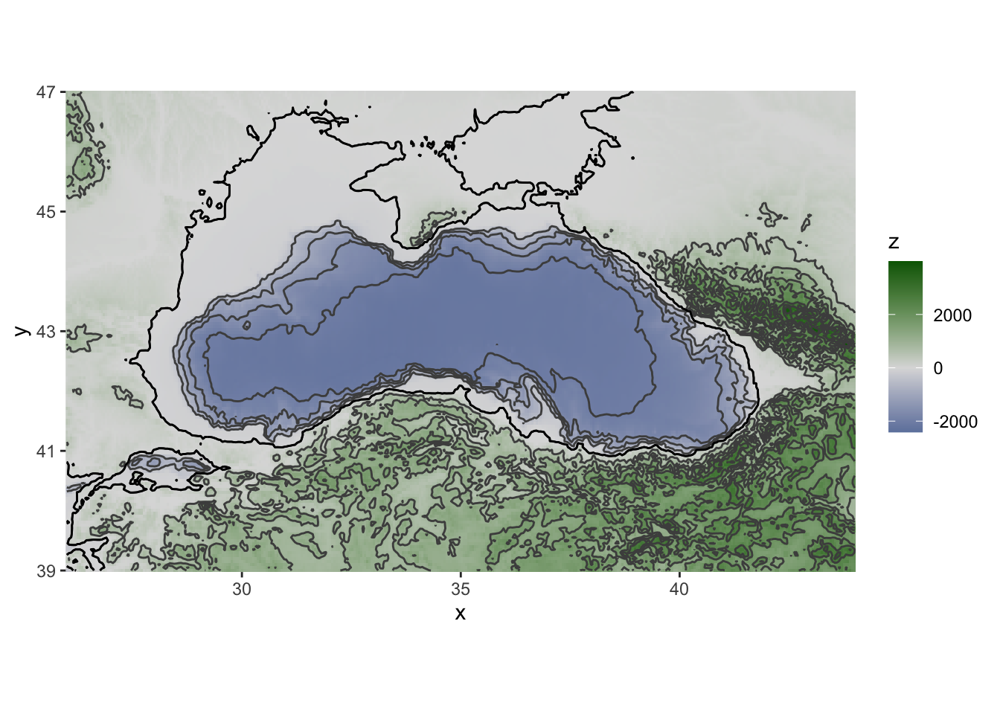
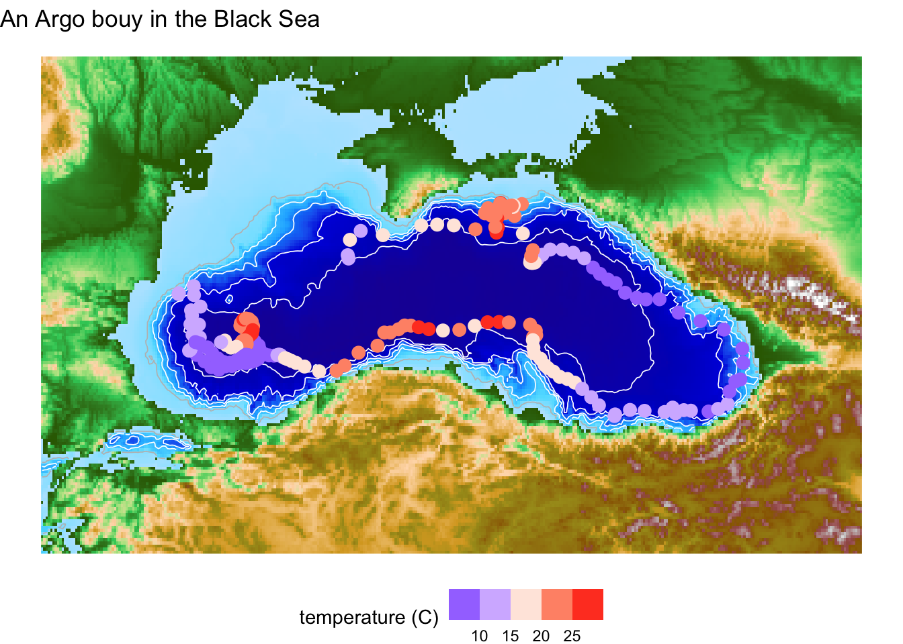

library(here)
library(tidyverse)
library(stringr)
library(sf)
library(ncdf4)
library(marmap)
library(tidyterra)
library(ggnewscale)
library(gganimate)
library(lubridate)Day 22 Movement
Re-create this image
Today’s goal is to recreate the ARGO float animated image from this blog post: annimate oceanographic data by Masumbuko Semba GitHub
I ended up using more of this code: @HansenDJohnson https://hansenjohnson.org/post/bathymetric-maps-in-r/ and @geokaramanis https://github.com/gkaramanis/30DayMapChallenge/tree/main/2022/07-raster-earth
This will allow me to practice some new skills:
- ARGO float data. I have never worked with that.
- Learn to process netCDF file in R. It’s been awhile since I have done that.
- {gganimate} to animate plots
- Use the {marmap} R package for oceanographic data
Set-up
Download the ARGO data
I went here and downloaded an ARGO float netCDF for a float in the Black Sea. https://dataselection.euro-argo.eu/
ncfile <- here::here("content", "data", "GL_PR_PF_6903766.nc")
argo <- ncdf4::nc_open(ncfile)Figure out the names of things. Sadly this isn’t a proper ARGO file so oce:read.argo() doesn’t work.
names(argo$var) [1] "TIME_QC" "POSITION_QC"
[3] "DC_REFERENCE" "DIRECTION"
[5] "VERTICAL_SAMPLING_SCHEME" "PRES"
[7] "PRES_QC" "TEMP"
[9] "TEMP_QC" "PSAL"
[11] "PSAL_QC" names(argo$dim)[1] "TIME" "DEPTH" "LATITUDE" "LONGITUDE" "POSITION" "STRING32"
[7] "STRING256"A bit of poking reveals that the ARGO float data is from 2 sampling schemes: one at the surface and the other that is sampling as the flow goes down. I’ll use just the data from the “Primary sampling” at the surface.
a <- ncdf4::ncvar_get(argo, "VERTICAL_SAMPLING_SCHEME")
good <- stringr::str_detect(a, "Primary sampling")
a[1:3][1] "Primary sampling: averaged [10 sec sampling 1 dbar average from surface to 100 dbar; 10 sec sampling 2 dbar average from 100 dbar to 500 dbar; 10 sec sampling 5 dbar average from 500 dbar to 1000 dbar]"
[2] "Primary sampling: averaged [10 sec sampling 5 dbar average from 2000 dbar to 500 dbar; 10 sec sampling 2 dbar average from 500 dbar to 100 dbar; 10 sec sampling 1 dbar average from 100 dbar to 2.4 dbar]"
[3] "Near-surface sampling: averaged unpumped [10 sec sampling 1 dbar average from 2.4 dbar to surface]" Next I notice that the time is in julian days so I will need to convert that. There are a few ways to convert julian to date/time. Making the origin date a POSIXlt date object and adding on the seconds is an easy way.
# print(argo) and you'll see the ref time
to <- as.POSIXlt("1950-01-01")argo_df <- tibble(
time = ncvar_get(argo, "TIME"),
lon = ncvar_get(argo, "LONGITUDE"),
lat = ncvar_get(argo, "LATITUDE"),
temp = ncvar_get(argo, "TEMP")[1,],
psal = ncvar_get(argo, "PSAL")[1,]
) %>% subset(good) %>%
mutate(date = to+time*60*60*24) %>% # need to convert time to secs
mutate(qtr = as.character(quarter(date)))Black Sea
Using https://www.latlong.net/, I grabbed box coordinates.
y <- c(39, 47)
x <- c(26, 44)Make the bathymetry plot
Get bathymetry.
bathy <- marmap::getNOAA.bathy(x[1], x[2], y[1], y[2], resolution = 3)Querying NOAA database ...This may take seconds to minutes, depending on grid sizeBuilding bathy matrix ...bathy_df <- marmap::fortify.bathy(bathy)autoplot.bathy(bathy, geom=c("tile","contour")) +
scale_fill_gradient2(low="dodgerblue4", mid="gainsboro", high="darkgreen")
Map a map with the ARGO data added.
basemap <- ggplot() +
# water raster
geom_raster(data = bathy_df %>% filter(z < 0), aes(x, y, fill = z), show.legend=FALSE) +
scale_fill_hypso_c("etopo1_bathy") +
# add contours
geom_contour(data = bathy_df %>% filter(z < 0),
aes(x=x, y=y, z=z),
breaks=c(-100),
linewidth=c(0.3),
colour="grey") +
geom_contour(data = bathy_df %>% filter(z < 0),
aes(x=x, y=y, z=z),
breaks=c(-500, -1000, -1500, -2000),
linewidth=c(0.3),
colour="white") +
new_scale_fill() +
# Add argo points
geom_point(data = argo_df, aes(x = lon, y = lat, color = temp), size=3) +
scale_colour_steps2(low = "blue", mid = "white", high = "red",
midpoint = mean(argo_df$temp), name="temperature (C)") +
new_scale_fill() +
# land raster
geom_raster(data = bathy_df %>% filter(z >= 0), aes(x, y, fill = z), show.legend=FALSE) +
scale_fill_hypso_c("gmt_globe_hypso") +
theme_void() +
theme(
legend.position = "bottom"
) +
ggtitle("An Argo bouy in the Black Sea")
basemap
## map the location
argo.animate <- basemap +
geom_label(
data = argo_df %>% slice(seq(1,dim(argo_df)[1],14)),
aes(label = format(date, "%b %Y")), x=35, y=43)+
transition_time(date)+
ease_aes("sine-in-out")+
shadow_mark()
gganimate::animate(argo.animate)
Save
gganimate::anim_save(here::here("content", "argo.gif"))